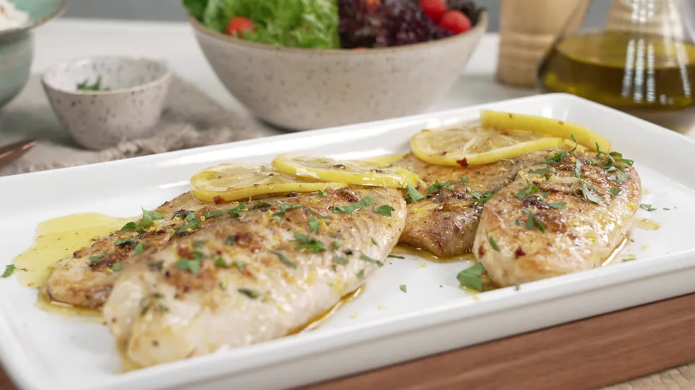

Filé de tilápia grelhado

fácil
20min
2 porções
O filé de tilápia grelhado é uma receita fácil para quem busca rapidez na cozinha. Saiba como fazer o prato que fica pronto em 20 minutos!
Em busca de uma receita simples, fácil e rápida? O filé de tilápia grelhado é uma ótima opção!
Sugestão para o almoço ou jantar, o peixe ganha um sabor especial ao ser temperado com pimenta-do-reino,
páprica defumada e limão-siciliano.
Feito na frigideira, o filé de tilápia grelhado fica pronto em apenas 20 minutos.
Você pode incrementar o prato com pimenta-calabresa e salsinha. Confira o passo a passo completo e saiba como fazer a receita!
Ingredientes
Filé de tilápia grelhado
360 gramas de filé de tilápia
Sal a gosto
Pimenta-do-reino a gosto
Um quarto de colher de chá de páprica defumada
1 ramo de tomilho fresco
1 fio de azeite
2 colheres de sopa de manteiga
2 dentes de alho laminados
Um quarto de colher de chá de pimenta-calabresa
Suco de meio limão-siciliano
Meio limão-siciliano em rodelas
Raspas de limão-siciliano
Salsinha picada a gosto
Modo de Preparo
Filé de tilápia grelhado
Tempere os filés de tilápia com sal, pimenta-do-reino, páprica defumada e tomilho fresco.
Em uma frigideira, coloque 1 fio de azeite e 2 colheres de sopa de manteiga. Deixe derreter, acrescente os filés de tilápia temperados e doure os dois lados.
Adicione 2 dentes de alho laminados, um quarto de colher de chá de pimenta calabresa, suco de meio limão-siciliano e meio limão-siciliano em rodelas.
Sirva com raspas de limão-siciliano e salsinha picada a gosto.